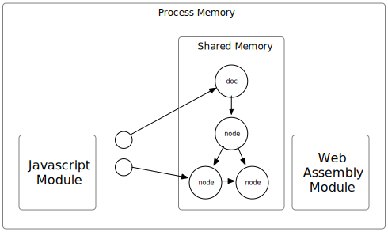

The architecture of libxml2-wasm is depicted in the following diagram.

We compile the libxml2 C code into a web assembly module that utilizes a memory buffer as its heap.
This enables us to store data and share it with JavaScript.
However, the data is presented in the form of C structs,
which pose challenges in JavaScript usage.
To address this issue,
we create JavaScript classes that encapsulate the data and provide user-friendly methods.
The diagram illustrates how the XML’s DOM structure is stored in the shared memory using numerous objects (C structs and C strings).
Notably, not all these objects have corresponding wrapper objects on the JavaScript side,
as only certain nodes within the DOM structure are accessible by its user.
The WebAssembly module lacks garbage collection, WebAssembly module does not have garbage collection, meaning users are responsible for memory management and must explicitly free the memory they allocate.
However, there exists a clear ownership hierarchy among objects, so users only need to free the root object rather than every individual node. For instance, when a doc object is freed, all the nodes within it are also freed.
To dispose an object, invoke the dispose method from its wrapper:
doc.dispose();
The proposed using declaration, which is already available in TypeScript 5.2, is also supported.
If your environment supports it, you can use:
using doc = XmlDocument.fromBuffer(xmlBuffer);
at the end of the local scope of doc,
[Symbol.dispose]() is automatically called.
In addition to the DOM, other objects that own Web Assembly memory also need to be disposed.
These classes inherit from the base class XmlDisposable.
The JavaScript classes (subclasses of XmlDisposable) owned by the JavaScript runtime can be automatically garbage collected.
Once they are GC'ed, they attempt to release the managed resource if the dispose() method has not been called.
While this automatic dispose serves as a useful workaround, it is not a perfect solution.
The DOM object tree, stored in shared memory, holds all the XML content information. In almost all cases, it consumes significantly more memory compared to the JavaScript wrapper objects. Additionally, the shared memory is much smaller than the memory where the JavaScript objects reside. Therefore, it’s highly probable that the out-of-memory error occurs before the garbage collector is triggered.
It’s challenging to write leak-free code. libxml2-wasm offers a memory tracker to aid in identifying the leaked objects.
To enable the memory tracker:
import { diag } from 'libxml2-wasm';
diag.configure({ enabled: true });
After executing the code for a while, you can let the tool generate a memory allocation report to check the number of objects allocated but not disposed:
import { diag } from 'libxml2-wasm';
console.log(diag.report());